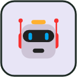

AI 비서 · 카이온
아침에 앱 세 개를 열어 보던 일을 알림 하나로 줄인다.
아침의 세 군데
아침마다 캘린더에서 오늘 일정을 보고, 뉴스를 훑고, 콕콕 예약알림에 걸어 둔 예약이 열렸는지 확인했다. 매일 같은 순서로 세 곳을 돌기에 한 화면에 모아 아침에 한 번 알려 주는 비서를 만들고 있다.
한 화면에 모으는 것
오늘의 캘린더 일정, 관심 키워드에 맞는 최근 뉴스 세 건, 콕콕 예약알림이 지켜보는 항목의 상태를 모은다. 뉴스는 등록해 둔 RSS에서 키워드로 고르고, 원하면 AI로 한국어 요약을 붙인다. 콕콕의 데이터는 읽기 전용으로만 열어 원래 앱에 영향을 주지 않는다.
휴대폰으로 아침 알림
매일 아침 7시 30분에 브리핑을 만들어 휴대폰에 웹푸시로 보낸다. 아이폰은 홈 화면에 추가해 앱처럼 열고, 브리핑은 한국어로 읽어 주기도 한다. 그 시각에 컴퓨터가 꺼져 있었으면 두 시간 안에 다시 켰을 때 늦게라도 만들어 보낸다.
조심한 부분과 다음
내 컴퓨터에서 도는 개인용이라 처음 접속할 때 접속 코드를 입력해야 열리고, 캘린더 비밀번호 같은 값은 저장소에 올리지 않는 설정 파일에만 둔다. 다음에는 매일 아침 직접 써 보면서 브리핑에 넣을 것과 뺄 것을 다듬으려 한다.
11월 26일 · 카이온과 음성으로 대화하기
아침에 브리핑을 읽어 주는 기능에서 이어서, 말을 걸면 카이온이 답하는 음성 대화를 붙였다. 캐릭터별로 목소리를 고르고 나를 어떻게 부를지 설정할 수 있다. 캘린더는 오늘 일정에서 일·주·월 보기로 넓혔다.
인천대 LMS를 카이온으로
별도로 만든 ‘인천대 LMS 내보내기’ 확장으로 강좌 공지와 주차별 수업 정보를 JSON으로 내려받을 수 있다. v0.4.0에서는 카이온으로 보내는 기능에 6시간마다 자동 전송하는 설정을 더했다. 강의실에서 모은 정보를 비서에서 받아볼 수 있게 두 도구를 연결한 작업이다.